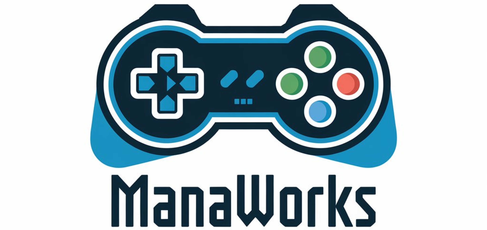

Projects
A curated selection of work across Data Analysis, Software Engineering, and Game Development.
Each entry includes a short overview, key contributions, and the tech used.
📈 Data Analysis

ManaWorks
Game Publisher Pitching Dashboard to understand patterns of project pitches.
- Created a Tableau dashboard for pitching overview for a game publisher.
- Analyzed project data such as requested revenue, expected ROI and more.
Tech: Tableau and Python

GameVerse
Game Studio Analysis Case Study to understand playerbase engagement and game revenue.
- Created databricks ETL pipeline with Spark using the medallion architecture.
- Created EDA visualization with Excel and then a dashboard with Tableau.
Tech: Databricks, Spark, SQL, Excel, Tableau and Python

DATASUS Mortality Dashboard
Research prototype exploring Brazilian SUS mortality data with interactive visual narratives.
- Designed filters and views by cause, region, and time
- Engineered data cleaning to handle public dataset edge cases
Tech: R, Shiny, ggplot2

Tableau Data Visualizations
Tableau dashboards built from public datasets, focusing on clear KPIs and comprehension.
- Rapid EDA to identify the most relevant metrics
- Single-view dashboards to support cohesive storytelling
Tech: Tableau and Excel

Gesture Recognition with Leap and ML
Comparison of ML Algorithms to classify gestures with Leap Motion
- Created a dataset with hand gesture data from 4 people with C and Leap Motion.
- Used ML and compared performance results for gesture classification.
Tech: C, Python, scikit-learn and Leap Motion

HCI-Guided Dashboard Development
HCI techniques applied to a dashboard using open COVID-19 data for Maringá.
- Ran user research and translated findings into UI/UX requirements
- Built an interactive prototype aligned to HCI best practices
Tech: R, Shiny, ggplot2, HCI methods
Private Repo | More details
💻 Software Engineering

BipaNota (Barcode Verification App)
App for retailers to speed up goods verification against fiscal notes via barcode scanning.
- Implemented camera-based scanning and product matching logic
- Led development and testing for internal Google Play pilots
Tech: Flutter, Dart, Supabase and RevenueCat
Closed testing · work in progress | More details

Body Recognition with Kinect and PD
System which makes body joints control musical notes, pitch and volume in Pure Data.
- Developed a desktop app with Kinect and C++ to recognize body joints.
- Through sockets, the app was connected to Pure Data to transmit body data.
Tech: C++, Win32, Kinect and Pure Data

Stelf (Game Store Prototype)
University team project inspired by Steam; end-to-end desktop app with catalog and persistence.
- Scrum-style development with a 4-student team over ~3 months
- WinForms UI and MongoDB backend integration
Tech: C#, WinForms, MongoDB, Visual Studio

Gesture Recognition for Health IS
Research using Leap Motion to replace touch-based input in a web Health Information System.
- Gesture mapping to web navigation with Selenium automation
- Presented research insights at EAITI 2022 and CBIS 2022
Tech: Java, Selenium, Leap Motion
Private Repo | More details
🎮 Game Development

QuickJelly
2D game about controlling a jelly, collecting fruits and avoiding enemies.
- Learned 2D gameplay, physics, audio, rendering, and design.
- Used Animation Controllers, sorting layers, colliders, prefabs and more.
Tech: Unity, C#, Visual Studio

QuickFlower
Engine-less 2D survival game where you control a bee avoiding flowers on a timer.
- Implemented bitmap loading, audio and CPU rasterization with win32 and C.
- Applied SIMD for rendering and QPC for timing with memory usage from syscalls.
Tech: C, Win32 API, Visual Studio
DATASUS Mortality Dashboard
I conducted a year-long undergraduate research project focused on developing an innovative solution for visualizing mortality data using publicly available datasets from Brazil’s Universal Health Care System (SUS).
The project leveraged R, Shiny, and ggplot2 to build a dashboard prototype. While data acquisition was straightforward thanks to open access, the main challenges lay in data cleaning and manipulation due to complex and case-specific inconsistencies.


Tableau Data Visualizations
After completing a LinkedIn Learning course (see the Achievements tab), I started exploring public datasets from Kaggle and creating interactive dashboards using Tableau. Leveraging Tableau’s features—such as calculated fields, filters, parameters, and dynamic visualizations—I was able to transform raw data into compelling stories. While R and Shiny offer extensive customization, Tableau excels with its intuitive drag-and-drop interface, rapid dashboard development, and built-in visualization types like heat maps, treemaps, and trend lines that make insights more accessible and engaging.
Through this hands-on experience, I gained practical knowledge in dashboard design, including prioritizing the most relevant metrics, defining key performance indicators (KPIs), and optimizing visual layouts for clarity and impact.


Gesture Recognition with Leap Motion and ML
This project used the Leap Motion sensor by Ultraleap to collect hand-tracking data from four participants with different hand sizes. Each participant was asked to perform a set of predefined gestures taken from a gesture vocabulary proposed in a previous study. The data collection was carried out using the C programming language and the LeapC SDK. Afterward, the dataset was processed and cleaned to serve as input for machine learning classifiers.
The chosen algorithms were kNN, SVM, and Random Forest, as these are among the most commonly used in related research, allowing for direct comparison with results in the literature. Using Python’s scikit-learn library, I trained models with the hand dataset and evaluated their performance, testing multiple parameter configurations for each algorithm.
The results were consistent with expectations. Random Forest showed poor performance, with little variation across parameter changes. kNN performed slightly worse than SVM, which aligned with findings from previous studies. These outcomes also allowed us to identify which gestures were harder to classify and which hand sizes were easier to recognize.


HCI-Guided Dashboard Development
This project was my Bachelor’s dissertation, where I applied Human-Computer Interaction (HCI) techniques to guide the development of dashboards. The methods applied were from dashboard design, HCI and data visualization authors such as Nielsen, Don Norman, Stephen Few, Scott Berinato, Jonathan Schwabish among others.
The work spanned five months applying a 5 step method consisting of literature study, heuristics identification, data visualization tool choice, case study to apply heuristics and pilot testing, resulteding in a prototype built with R, Shiny, and ggplot2. The dashboard was based on publicly available Covid-19 data for the city of Maringá, sourced from Kaggle.


BipaNota
I have over a year of experience developing Android applications with Flutter and Dart, ranging from simple static apps to dynamic, industry-oriented solutions. One of my main projects is BipaNota, a mobile application designed to automate the verification of invoices in stores and distributors. The app includes features such as account authentication, barcode scanning (via both camera and USB scanner), invoice downloads using access keys, and PDF report generation. It also leverages modern development practices like object-oriented programming, RESTful APIs, session authentication, Supabase for database management, custom widgets, and state management with Provider.
Currently, BipaNota is in a closed testing phase on Google Play, with active users providing frequent feedback. I work as the sole developer in a team of three, alongside two collaborators focused on marketing and adoption. The application addresses a common challenge in small businesses, where employees spend significant time manually checking deliveries against invoices. By automating this process, BipaNota reduces verification time, freeing up staff to focus on customers. Looking ahead, we plan to expand the project with additional features such as monetization and iOS availability.


Body Recognition with Kinect and PD
This project was a freelance job I did for a Master's degree a student was pursuing at the same university I studied at (State University of Maringá). The idea was to create a system to recognize body joints with the Kinect sensor from Microsoft, specifically the Xbox One Kinect, and to create sounds with the recognized body. Together with the C++ programming language, I had to learn Pure Data which is a visual programming language to create sounds and music through circuit-like diagrams.
I had to learn how to create diagrams in PureData and how to connect it to my other Kinect app so that I can send body joint data to create sounds. I did this by using sockets with the win32 API. Every number of frames (can be configured), a buffer containing all the body joint data is filled and sent through a socket, then the buffer gets cleared to be filled up again afterwards. The user can choose what join data will be sent through the socket.


Stelf (Game Store Prototype)
This project was a university prototype of a desktop application for a game store, inspired by platforms like Steam. It was developed over the course of three months by a team of four students, following a Scrum-style development cycle with task management handled through Trello. Here’s the repository.
The application was built using C#, WinForms, and Visual Studio, covering both the front-end interface and the back-end logic. For data storage, we integrated a non-relational MongoDB database to manage the catalog of games available in the store.


Gesture Recognition for Health IS
This was a year-long undergraduate research project focused on developing a gesture recognition system as an alternative to traditional input devices such as keyboards, mice, and touchpads. The goal was to explore new ways of interacting with computers through more natural, touch-free methods.
For gesture detection, we used the Leap Motion sensor alongside Java, Selenium, and Eclipse to enable navigation within a Health Information System web application. I documented the entire development process in a research article and had the opportunity to present this work at both EAITI 2022 and CBIS 2022.
One important detail about this reseach is that, for Gesture Recognition, ML algorithms were not used, mainly the built-in gesture recognition features of the Leap Motion sensor. Later in other projects I participated, Machine Learning Algorithms were used in conjunction with this sensor.


QuickJelly
This was my first game project, where the player controls a cute jelly character tasked with collecting fruits scattered across the map while avoiding enemy jellies, all under the pressure of a countdown timer. You can check out a short gameplay video.
The game was developed in about a month using C#, Unity, and Visual Studio. Throughout the process, I gained valuable experience in 2D gameplay mechanics, physics, audio integration, rendering, and game design principles, which gave me a strong foundation for future game development projects.


QuickFlower
This is a 2D game where the player controls a flower trying to escape bees that attempt to pollinate it. The goal is to survive each level for 15 seconds, with increasing difficulty as more bees appear over time. You can watch a short gameplay video.
The game was developed using C, the Win32 API, and Visual Studio, without any game engine. Building it from scratch provided hands-on experience in bitmap loading and rendering, audio handling, CPU-side rasterization, SIMD optimizations, and other low-level programming techniques, offering deep insight into the mechanics behind 2D games.